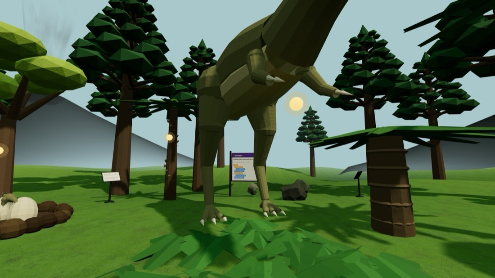
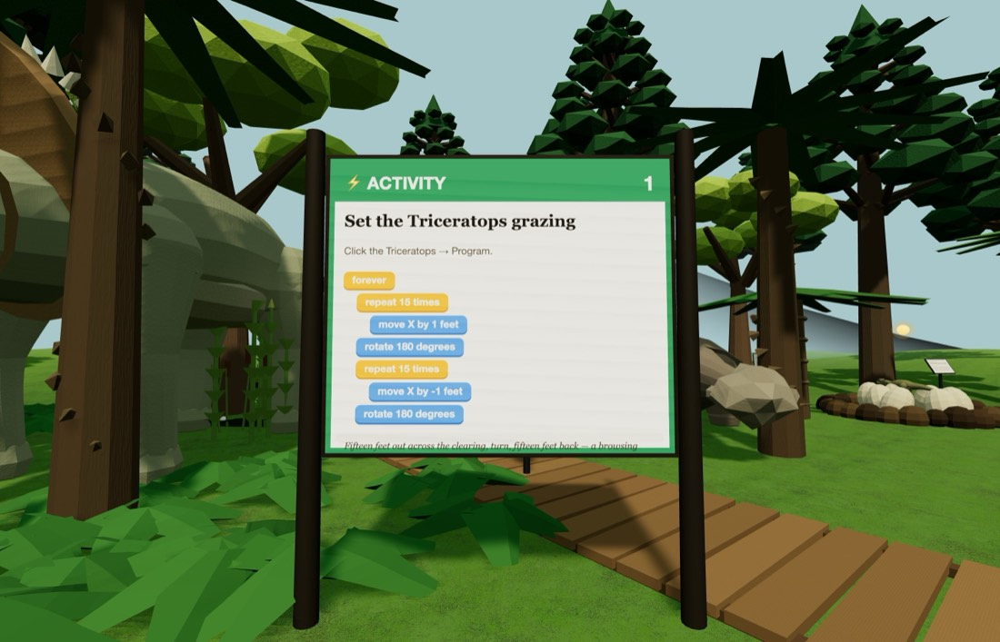
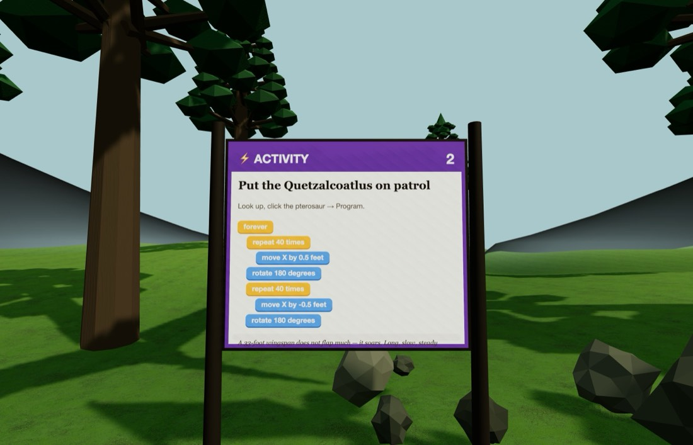

🦖 Dinosaur Island
The last days of the Cretaceous, at full size. Every animal here really did live alongside the others.
Getting there: ▶ Open Dinosaur Island One click — nothing to download and no account. Or open Edusim yourself and tap ☰ Menu → Load World → Dinosaur Island. You will be set down at the front gate. Look for the bright ⚡ ACTIVITY boards — there are two of them. Type it in: edusim3dweb.com/app/?world=6 Opening a world replaces whatever is currently in your copy — save first with ☰ Menu → Load World → Save World if you have something you want to keep.



Quick starts — do these first
Both of these are printed on boards inside the world too, so you can leave this card at home. Click the object, choose Program, drag the blocks together in this order, then press Save.
Set the Triceratops grazing
Click the Triceratops → Program
- forever
- repeat 15 times
- move forward 1 feet
- rotate 180 degrees
- repeat 15 times
- move forward -1 feet
- rotate 180 degrees
💡 Fifteen feet out across the clearing, turn, fifteen feet back — a browsing animal working a patch of ferns. Add wait 0.3 seconds inside the loops and it stops to chew.
Put the Quetzalcoatlus on patrol
Look up, click the pterosaur → Program
- forever
- repeat 40 times
- move forward 0.5 feet
- rotate 180 degrees
- repeat 40 times
- move forward -0.5 feet
- rotate 180 degrees
💡 A 33-foot wingspan does not flap much — it soars. Long, slow, steady passes look far more right than anything quick. Try adding move up by to make it ride a thermal.
Then try these three
-
Build a herd
Duplicate the Triceratops three times after you have given it the grazing program. The copies inherit the walking but not the duplicating — so you get a herd that moves together instead of a herd that never stops multiplying.
- repeat 3 times
- duplicate 14 ft away
-
The slow prowl
Give the T. rex the same out-and-back pattern as the Triceratops, but with long waits. A 9-ton predator does not scurry. Which speed makes it look heaviest?
- forever
- repeat 20 times
- move forward 0.6 feet
- wait 0.4 seconds
- rotate 180 degrees
- repeat 20 times
- move forward -0.6 feet
- wait 0.4 seconds
- rotate 180 degrees
-
Hatching day
Find the nest with the hatchling in it and make the little one grow. Dinosaurs looked after their eggs and their young — that behaviour is one of the strongest links between them and birds.
- repeat 10 times
- change size by 12 %
- wait 0.3 seconds
Block colours
- Control — repeat, forever, wait, when an object says, duplicate
- Motion — move forward, move up, glide, rotate, go back to start
- Looks — say, change size, set size, set opacity, change colour
One rule that catches everybody: move forward and glide follow the way the object is pointing, so a rotate in front of them genuinely steers — four sides and four 90° turns bring something back exactly where it began. move up is the exception: up is up whichever way a thing is facing.